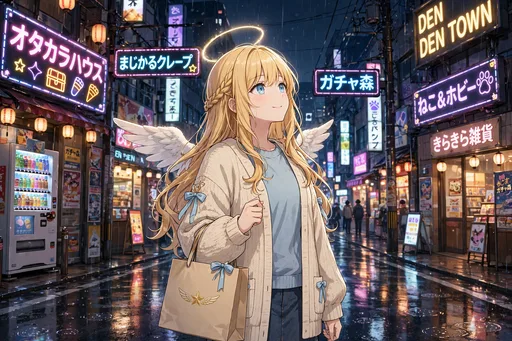
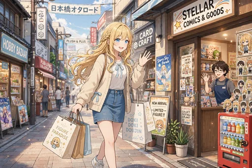
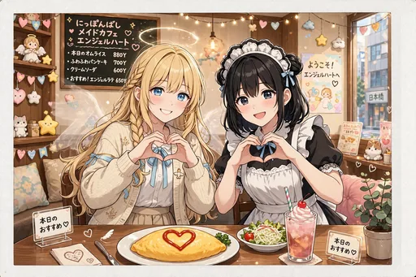
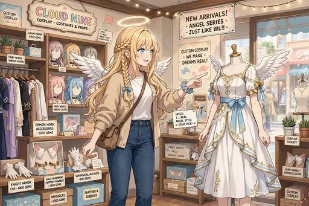

セラフィナ 第2弾『日本橋どっぷり編』イラストパック

ストーリー紹介
日本橋のオタク文化にどっぷり浸かっていく30枚です。オタロード歩きにクレーンゲーム、痛バッグ作り、同人ショップでの衝撃、推しの誕生日祭壇づくりからライブ参戦まで。店員さんに顔を覚えられるほどの常連になっていく、推し活全開の日々を描きます。
同人ショップやジャンク屋を巡り、推しの誕生日には祭壇を組み、ライブにはペンライトを持って参戦。気づけば店員さんに顔を覚えられるほどの常連になっていく過程を描きます。第1弾で芽生えた興味が「推し活」という形に育っていく、蝕まれ度が一段上がる30枚です。
ダウンロード販売（ZIP 3分割）／全年齢／BOOTH「angel222」で販売中
商品情報
| タイトル | セラフィナ 第2弾『日本橋どっぷり編』イラストパック｜見習い天使の現代日本コメディ |
|---|---|
| 収録内容 | イラスト30点（ダウンロード販売） |
| 価格 | 500円 |
| 販売 | BOOTH「angel222」 https://angel222.booth.pm/items/9076095 |
| 備考 | 全年齢。登場するキャラクターは架空の存在です。イラストにはAI生成を含みます |
場面紹介（全30枚）



- 1. オタロードを紙袋いっぱいで歩く — オタロードを紙袋いっぱいに歩く場面。
- 2. メイドカフェ再訪、常連チェキ — メイドカフェを再訪し、常連としてチェキを撮る場面。
- 3. ゲーセンで音ゲーに熱中 — ゲーセンで音ゲーに熱中する場面。
- 4. クレーンゲームでぬいぐるみに再挑戦 — クレーンゲームでぬいぐるみに再挑戦する場面。
- 5. 同人ショップで薄い本に衝撃 — 同人ショップで薄い本を手に取り、衝撃を受ける場面。
- 6. ジャンク屋で部品を品定め — ジャンク屋で部品をじっくり品定めする場面。
- 7. コスプレ衣装店で「この天使衣装、本物です」 — コスプレ衣装店で「この天使衣装、本物です」と言ってしまう場面。
- 8. プラモデル作りに挑戦 — プラモデル作りに挑戦する場面。
- 9. カードショップでデッキ相談 — カードショップで店員さんにデッキ相談をする場面。
- 10. 古本屋で昭和の漫画に感動 — 古本屋で昭和の漫画に感動する場面。
- 11. フィギュア開封の儀 — 買ってきたフィギュアの開封の儀。
- 12. 自分のフィギュアを飾る棚 — 自分のフィギュアを飾るための棚を作る場面。
- 13. 痛バッグを作る — 推しのグッズで痛バッグを作る場面。
- 14. アニメの聖地で巡礼写真 — アニメの聖地である駅前で巡礼写真を撮る場面。
- 15. コラボカフェのメニュー制覇に挑戦 — コラボカフェでメニュー制覇に挑む場面。
- 16. 限定グッズの行列に並ぶ — 限定グッズの発売日に行列に並ぶ場面。
- 17. 推しの誕生日祭壇を作る — 推しの誕生日祭壇を作る場面。
- 18. ライブ参戦、ペンライトを振る — ライブ会場でペンライトを振る場面。
- 19. 配信を見ながらコメントを打つ — 配信を見ながらコメントを打つ場面。
- 20. 戦利品計画を立てる夜 — 戦利品計画を立てる夜。
- 21. 大きなイベント当日、紙袋を両手に — 大きなイベント当日、紙袋を両手いっぱいに抱える場面。
- 22. オタク仲間と居酒屋で打ち上げ — オタク仲間と居酒屋で打ち上げをする場面。
- 23. 深夜アニメの同時視聴 — 深夜アニメを同時視聴する場面。
- 24. グッズ整理と断捨離の葛藤 — 増えすぎたグッズの整理と断捨離に葛藤する場面。
- 25. ジャンクの山から掘り出し物 — ジャンクの山から掘り出し物を見つけた瞬間。
- 26. 店員さんに顔を覚えられている — 行きつけのお店で店員さんに顔を覚えられている場面。
- 27. 日本橋のネオンに佇む夜 — 日本橋のネオンに佇む夜の場面。
- 28. 本物の羽根でコスプレ大会に参加 — 本物の羽根でコスプレ大会に参加する場面。
- 29. 推しへのファンレターをしたためる — 推しへのファンレターをしたためる場面。
- 30. 常連の貫禄、私服で紙袋と笑顔 — 私服で紙袋を手に笑顔を見せる、常連の貫禄の一枚。
ほかのイラストパック
物語の次は、第3弾『日本の四季編』です。